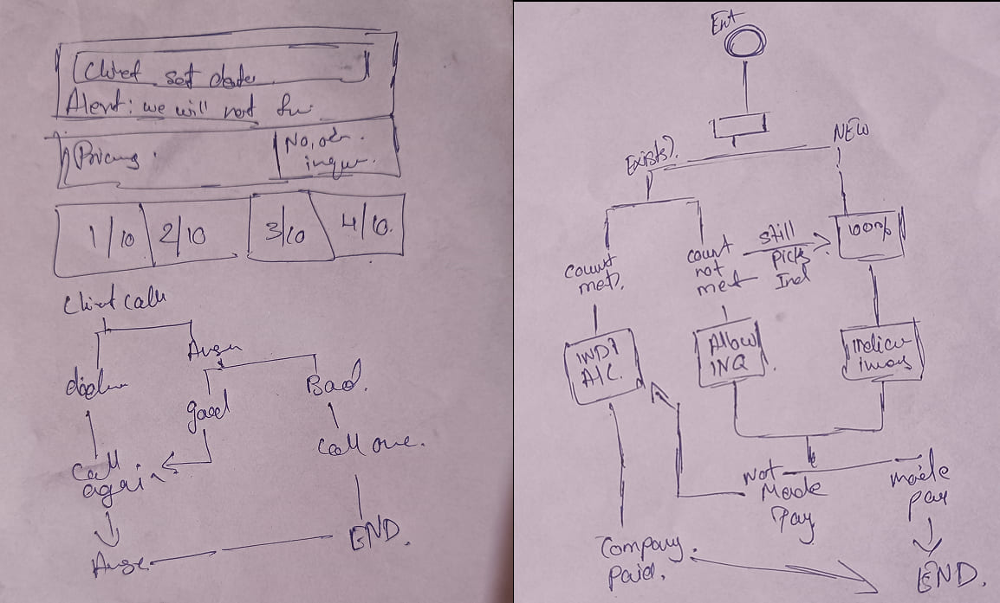
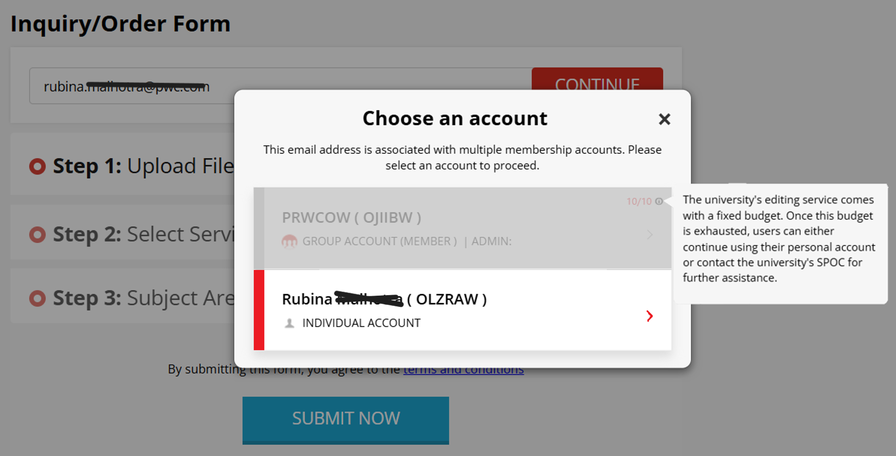

New Feature · Case Study
The $500K Feature: simplifying account selection
The problem we uncovered
We had a long-standing contract with a major university, funded by a large government research budget. The agreement allowed each of their 800 researchers to submit up to 10 documents for free editing — 8,000 documents in total. But our system lacked real-time tracking, creating a critical blind spot.
Authors sometimes submitted 12 to 15 documents unknowingly. This wasn't just a billing issue — the client expected us to enforce submission limits. Meanwhile, competitors were already pitching them with solutions that solved this exact problem.
The real cost of no tracking
Our submission process under the SPOC Approval Model was missing a crucial piece: real-time tracking. Researchers routinely exceeded limits, and three significant headaches followed:
- Financial risk — clients being charged incorrectly
- Erosion of trust — risking long-term partnerships
- Wasted time — manual tracking slowed every handover
Ideation
Trying to track assignments once they were already in the system was a losing battle. The university's confirmation process was delayed, and with a growing backlog, the SPOC would sometimes confirm orders randomly without any running count.
Our "aha" moment: halt the process at the inquiry stage itself, right on the form. When an author entered their email, the system would recognise them and present a choice — submit via the university-funded account, or via their own personal account (which they'd pay for upfront).

Solution
We added a smart check directly on the NEIP inquiry form. When a researcher entered their email, the system instantly looked up their submission count and offered two options:
- Group ID — the university-funded account, if submissions remained
- Individual account — personal account with upfront payment
This gave us a clear competitive edge: not just a tracker, but a live inquiry restrictor sitting on the form itself. More control for us, clearer expectations for the user.

What we built
- Automated quota tracking — monitored each author's submission usage in real time
- Enforced limits — blocked Group ID submissions once the quota was hit
- Transparency — live count shown in the account-selection pop-up so users knew exactly where they stood
The outcome
We built a new database table to track limits and updated the inquiry form so the account-selection pop-up displayed a live count. Once the limit was hit, the Group ID option greyed out. The pilot launched with the university's clients and worked cleanly on day one — without touching the legacy submission form or altering the core SPOC Approval Model workflow.

A $500,000 bid followed — the client's biggest concern had become the feature they kept pointing to in review calls.